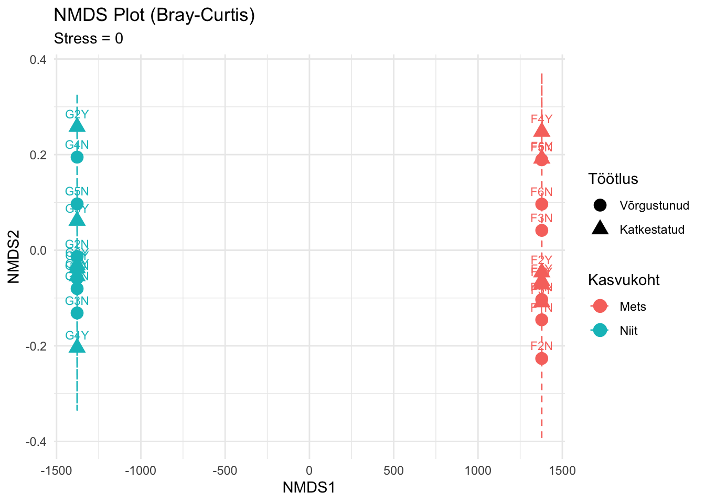
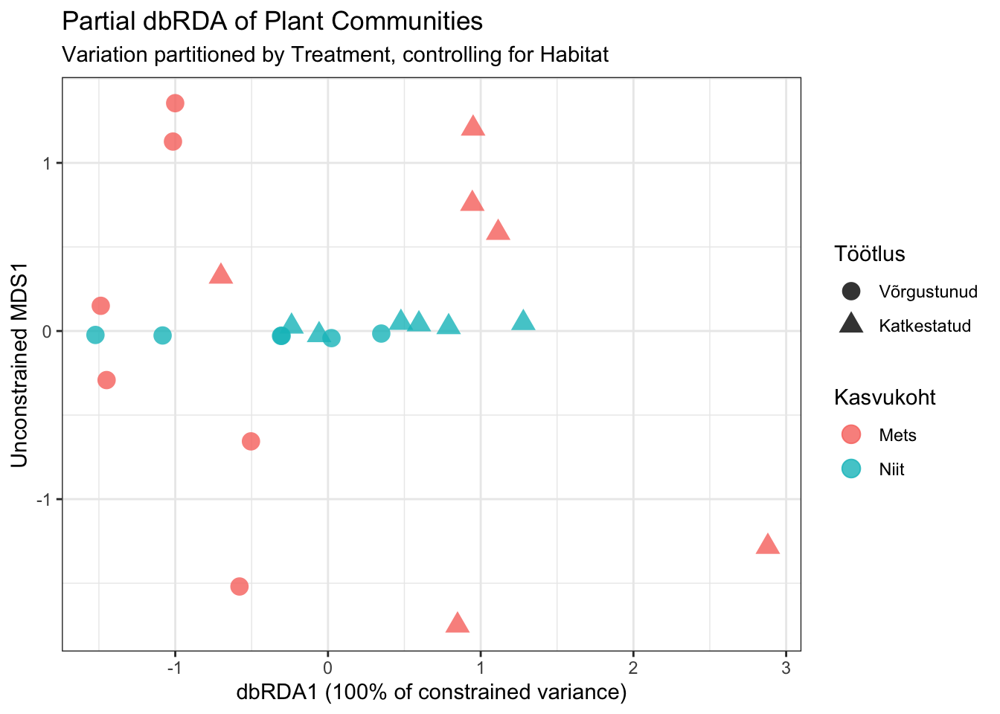
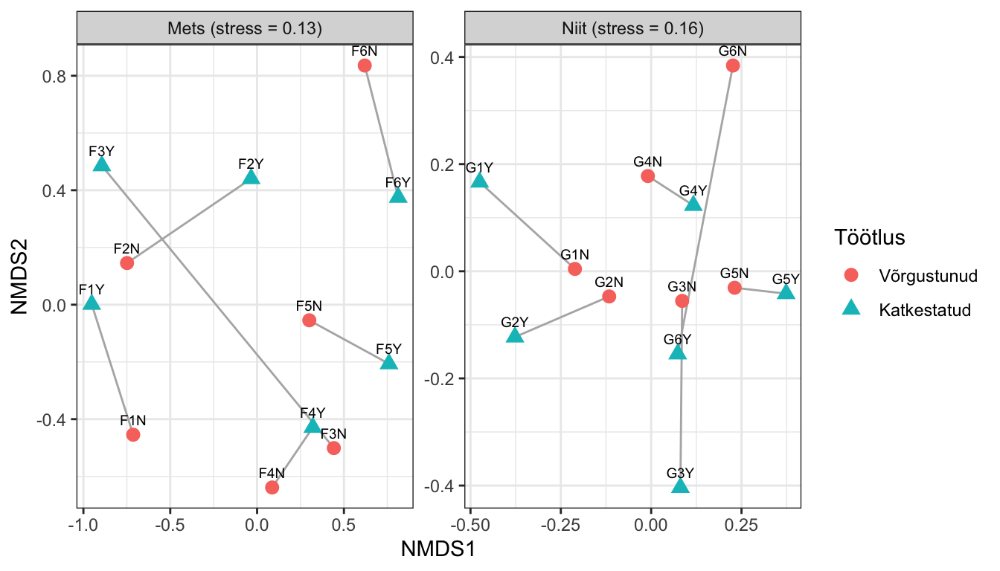
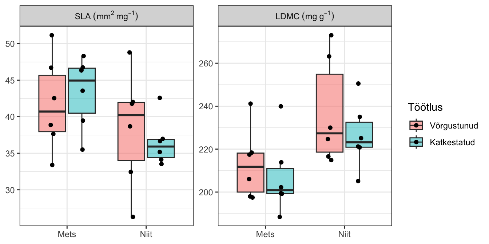

3 Tulemused
3.1 Taimekoosluste liigiline koosseis
UUS
Andmete parandus (14.11.2026) – juhendajale, lõplikust tekstist eemaldada
Lehe Community (failis DistNet_Quadrat.xlsx) kontrollimisel lehtede Quadrat_Forest ja Quadrat_Grassland vastu leidsin metsa ridades kopeerimisnihked. Niidu 12 ringi klappisid täpselt. Leht on nüüd genereeritud uuesti Quadrat_* lehtedest, originaal on alles eraldi failis. Parandused:
- metsa liikide plokis olid väärtused alates Berberis vulgaris’est nihkunud ühe veeru võrra paremale; rea viimane väärtus (Veronica chamaedrys) oli nimeta veerus, mis on eemaldatud;
- mitmel mõlemas kasvukohas esineval liigil (Festuca ovina, F. pratensis, F. rubra, Knautia arvensis, Luzula campestris, L. pilosa jt) olid metsa ridades naaberliigi väärtused;
- Galium album ja G. verum olid kahes veerus ning metsa väärtused läksid arvesse topelt;
- Pulsatilla pratense (kirjaviga metsalehel) puudus, nüüd liidetud P. pratensis’ega.
Analüüsi kood on muutmata (nüüd failis R/community_ordination.R). Parandus järeldusi ei muutnud:
| Enne parandust | Pärast parandust | |
|---|---|---|
| PERMANOVA, kasvukoht | R² = 0.544, p = 0.001 | R² = 0.541, p = 0.001 |
| PERMANOVA, töötlus | R² = 0.014, p = 0.639 | R² = 0.013, p = 0.685 |
| PERMANOVA, kasvukoht × töötlus | R² = 0.014, p = 0.643 | R² = 0.014, p = 0.617 |
| Osaline dbRDA, töötlus | p = 0.794 | p = 0.833 |
Kasvukoha tugev mõju ning töötluse ja koosmõju puudumine jäid samaks.
Taimekoosluste liigiline koosseis erines kasvukohtade vahel tugevalt (PERMANOVA, kasvukoht R² = 0,54, p = 0,001; tabel 3.2), kuid töötlus ega selle koosmõju kasvukohaga liigilist koosseisu ei mõjutanud (töötlus p = 0,685, koosmõju p = 0,617). Sama tulemuse andis osaline dbRDA, kus kasvukoha mõju oli eemaldatud (p = 0,833; tabel 3.3).
Metsa ja niidu kooslustel oli vähe ühiseid liike, mistõttu kõigi 24 ringi ühine NMDS-ordinatsioon eraldas ainult kaks kasvukohta (stress ≈ 0; joonis 3.1) ega näidanud kasvukoha sisest struktuuri. Kasvukohtade kaupa tehtud ordinatsioonide stress oli vastuvõetav (tabel 3.1, joonis 3.3). Ka kasvukohtade kaupa töötlus liigilist koosseisu ei mõjutanud (tabel 3.4). Metsas paiknesid paaride F1, F4, F5 ja F6 ringid ordinatsioonis teineteise lähedal ning paarid F1 ja F6 vastasotstes, mis viitab, et liigilist koosseisu mõjutas mikrokasvukoht rohkem kui töötlus.
| NMDS stress | PERMANOVA, töötlus | |
|---|---|---|
| Kõik ringid | ≈ 0 | R² = 0,013, p = 0,685 |
| Niit | 0,16 | R² = 0,055, p = 0,5 |
| Mets | 0,13 | R² = 0,063, p = 0,344 |
| Df | SumOfSqs | R2 | F | Pr(>F) | |
|---|---|---|---|---|---|
| Kasvukoht | 1 | 4.066 | 0.541 | 25.070 | 0.001 |
| Töötlus | 1 | 0.100 | 0.013 | 0.617 | 0.685 |
| Kasvukoht × töötlus | 1 | 0.107 | 0.014 | 0.663 | 0.617 |
| Jäägid | 20 | 3.243 | 0.432 | NA | NA |
| Kokku | 23 | 7.517 | 1.000 | NA | NA |

| Df | SumOfSqs | F | Pr(>F) | |
|---|---|---|---|---|
| Model | 1 | 0.100 | 0.627 | 0.833 |
| Residual | 21 | 3.351 | NA | NA |

| Kasvukoht | Df | R2 | F | Pr(>F) |
|---|---|---|---|---|
| Niit | 1 | 0.055 | 0.585 | 0.500 |
| Mets | 1 | 0.063 | 0.670 | 0.344 |
3.2 Dactylis glomerata lehtede funktsionaalsed tunnused
UUS
Dactylis glomerata lehtede eripind (SLA) oli metsas suurem kui niidul (keskmiselt 42,5 vs 37,4 mm² mg⁻¹; F1,20 = 4,47, p = 0,047) ning lehe kuivainesisaldus (LDMC) metsas väiksem kui niidul (210 vs 232 mg g⁻¹; F1,20 = 7,70, p = 0,012). Seenevõrgustiku katkestamine kumbagi tunnust ei mõjutanud (SLA p = 0,963, LDMC p = 0,296) ning kasvukoha ja töötluse koosmõju ei ilmnenud (SLA p = 0,486, LDMC p = 0,758; tabel 3.5, joonis 3.4).
Metsas kasvanud Dactylis’e lehed olid seega niidul kasvanutest õhemad ja suhteliselt veerikkamad. Kasvukohtade erinevus oli siiski mõõdukas (p 0,01–0,05) ning kuna igas kasvukoha ja töötluse kombinatsioonis oli ainult kuus ringi, on testide võimsus väike: töötluse mõju puudumine ei tähenda, et mõju poleks. LDMC mudeli jäägid ei olnud päris normaaljaotusega (Shapiro-Wilki test, p ≈ 0,02).
| Kasvukoht | Töötlus | SLA | LDMC |
|---|---|---|---|
| Mets | Võrgustunud | 41,7 ± 2,6 | 213 ± 7 |
| Mets | Katkestatud | 43,3 ± 2,0 | 207 ± 7 |
| Niit | Võrgustunud | 38,3 ± 3,2 | 237 ± 10 |
| Niit | Katkestatud | 36,5 ± 1,3 | 226 ± 6 |
